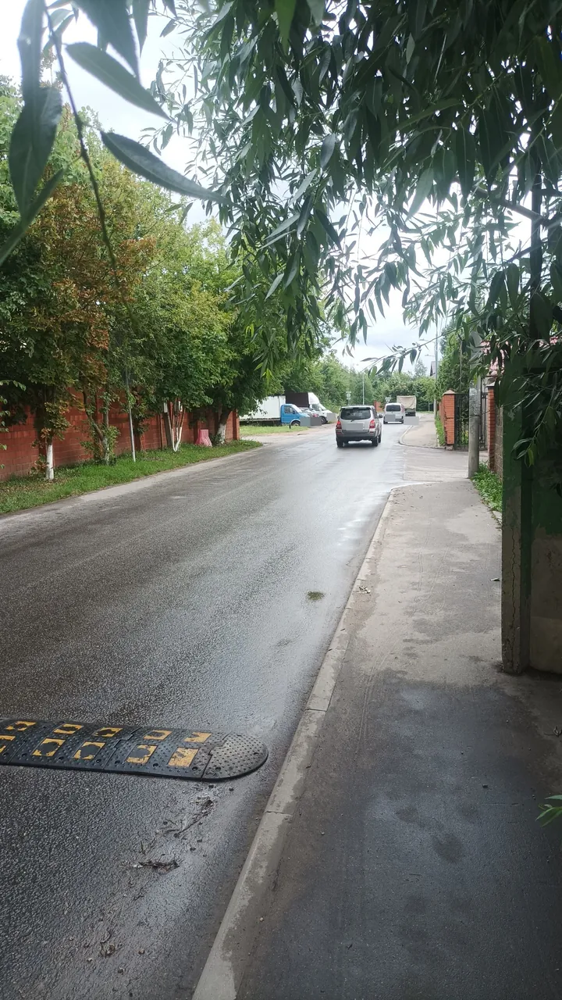
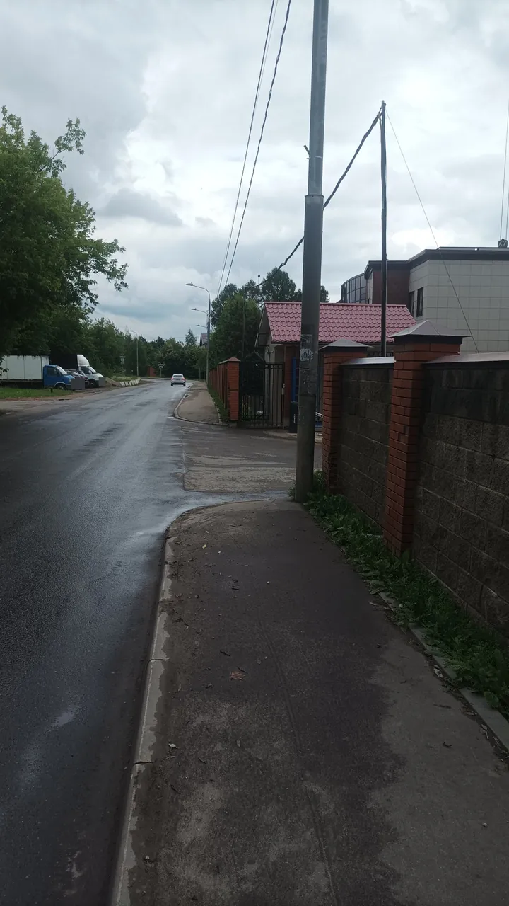
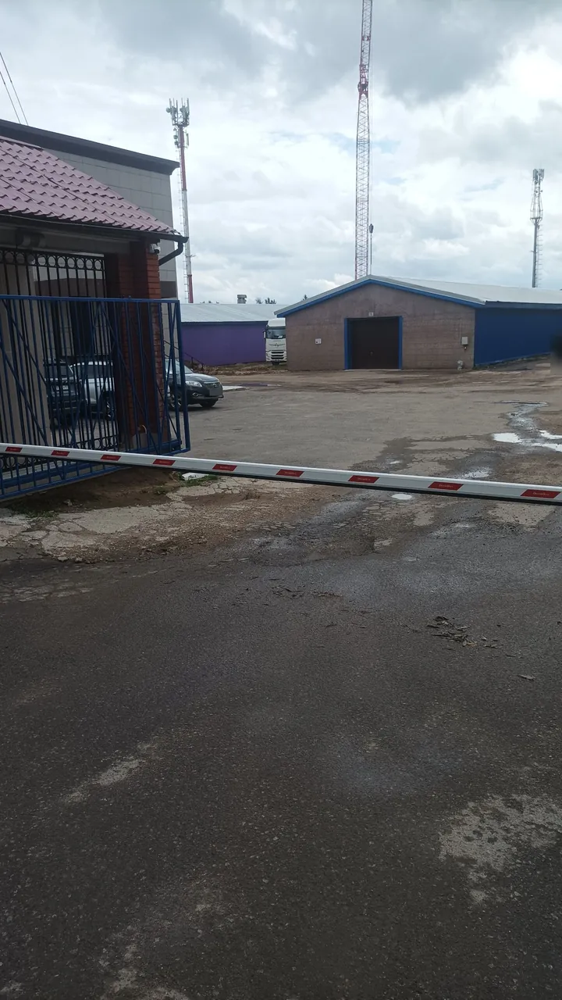
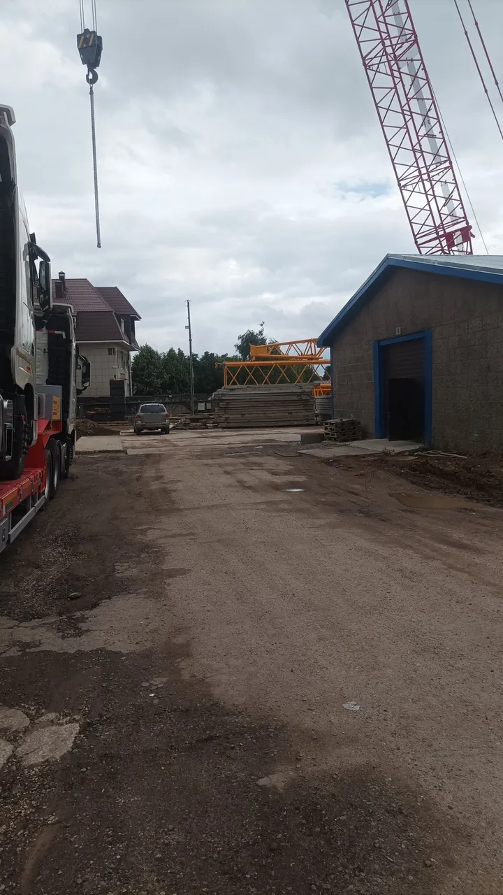
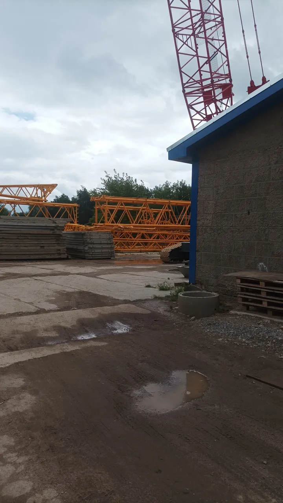
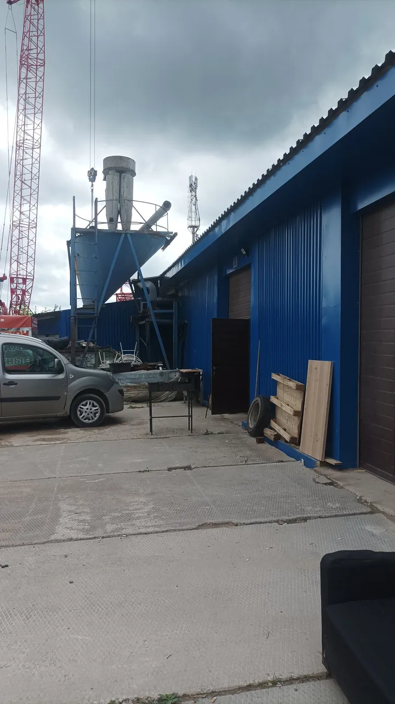
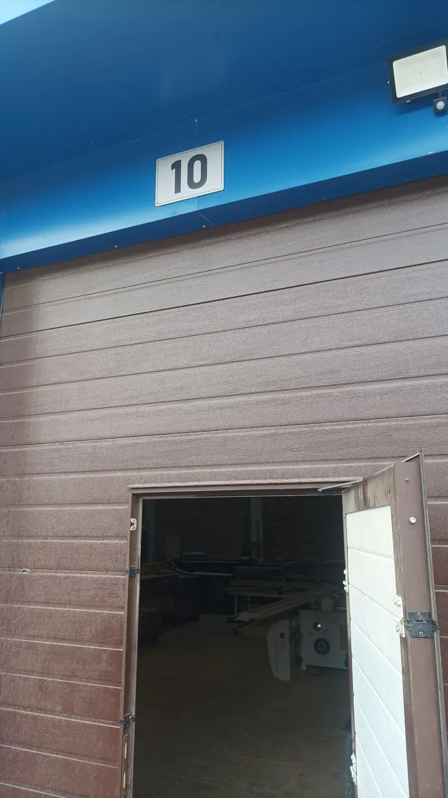

Как пройти в мастерскую
Сверяйтесь с фотографиями от улицы до входа. Зелёные стрелки подскажут направление.
г. Москва, дер. Губкино, 78 соор 5
Открыть Яндекс КартыМаршрут по шагам
-
Идите прямо по улице
Держитесь тротуара вдоль забора.

-
Поверните направо
Ориентир — поворот у кирпичного забора.

-
Дойдите до въезда
Ориентиры — шлагбаум и пост охраны.

-
Пройдите прямо по двору
Синее здание будет справа.

-
Поверните у угла здания
У угла синего здания поверните направо.

-
Идите вдоль синего фасада
Вход находится со стороны прохода.

-
Войдите под табличкой № 10
Это вход в мастерскую «Древесный Замысел».
